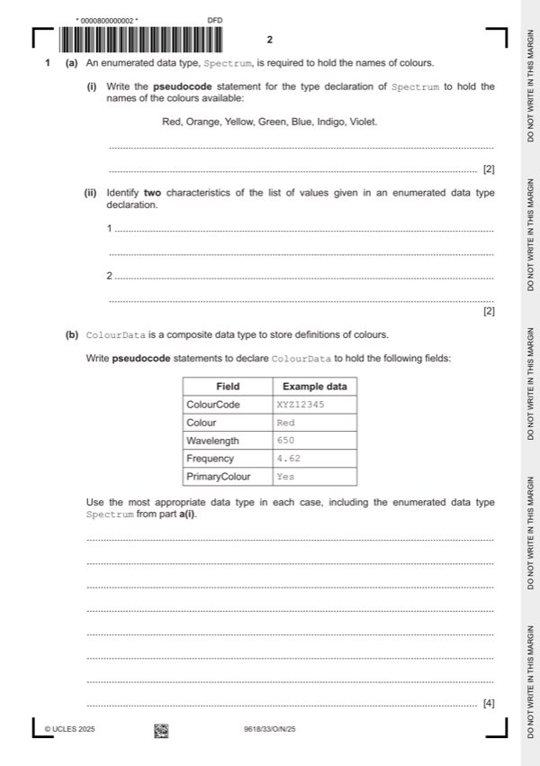

Question 1

Original paper page 2
Part 1(a)(i) — solution
- MP1 TYPE Spectrum =
- TYPE Spectrum = (Red, Orange, Yellow, Green, Blue,
Mark points
- MP1 TYPE Spectrum =
- TYPE Spectrum = (Red, Orange, Yellow, Green, Blue,
Part 1(a)(ii) — solution
One mark per mark point (Max 2) 2
MP1 the list is ordered/ordinal
MP2 the list contains all possible values
MP3 no duplicate values in list
MP4 all values are the same data type
Mark points
- Include the ideas shown in the solution above.
Part 1(b) — solution
One mark for TYPE ColourData and ENDTYPE correct 4
One mark for correct use of DECLARE in all declarations
One mark for correct use of Spectrum in declaration
One mark for remaining four declarations correct (STRING, INTEGER,
REAL, BOOLEAN)
Example answer
TYPE ColourData
DECLARE ColourCode : STRING
DECLARE Colour : Spectrum
DECLARE Wavelength : INTEGER
DECLARE Frequency : REAL
DECLARE PrimaryColour : BOOLEAN
ENDTYPE
University Press & Assessment 2025 Page 6 of 16
9618/33 Cambridge International AS & A Level – Mark Scheme October/November 2025
Guidance
Mark points
- Include the ideas shown in the solution above.